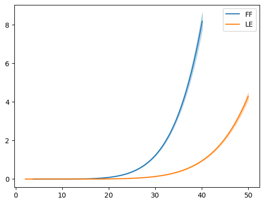
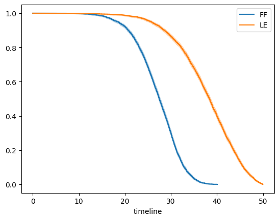
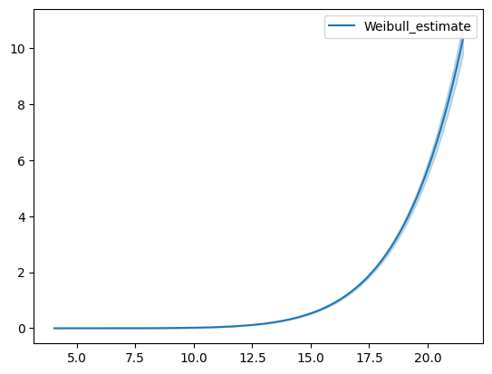
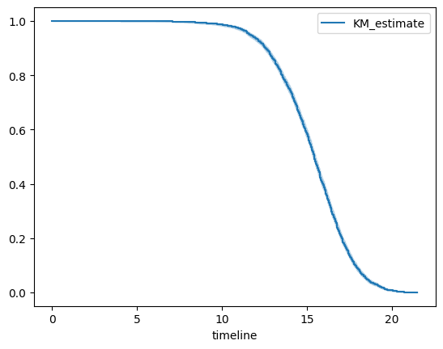
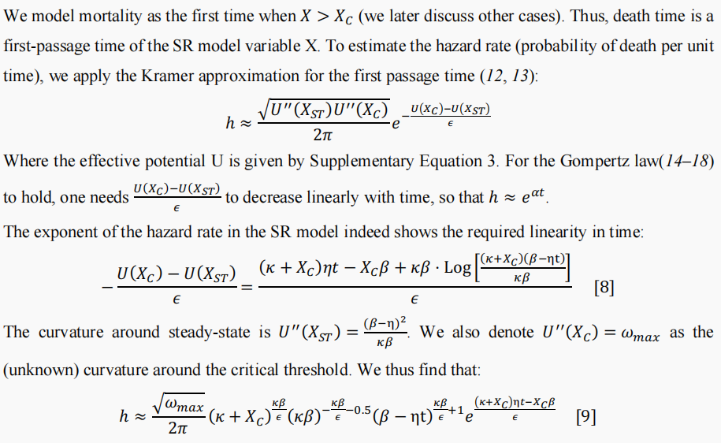
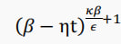
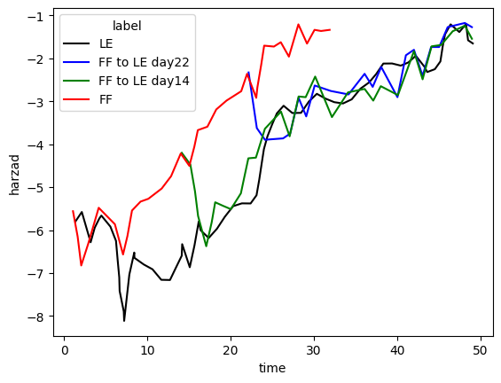
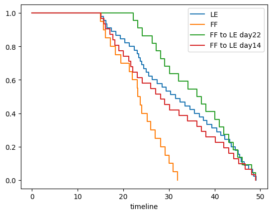

Senescent cell turnover slowdown with age providing an explanation for the Gompertz law#
Introduction#
The aging process is a complex phenomenon that involves a multitude of biological changes at the cellular and molecular levels. One of the hallmarks of aging is the accumulation of senescent cells, which are cells that have undergone cell cycle arrest and changes that contribute to tissue dysfunction and degeneration, such as senescence-associated secretory phenotype. The Gompertz law describes the exponential increase in mortality rates with age, but the underlying mechanisms behind this phenomenon are not well understood.
We were tasked to examine this paper by Karin et al. [1], where the authors endeavoured to tie together aging and the accumulation of senescent cells in mice based on a longitudinal dataset. They used mathematical modeling to ascertain the most likely relationship between senescent cells accumulation and age, and verified these inferences by both experiments and simulation.
The team succeded in reproducing the computational parts of the the research in question, including the dynamic model. From that, the dynamics of first passage time in relation to Gompertz law have been outlined.
Results#
Research workflow evaluation#
The research has been based on the premise that cells transition into senescence from randomly accumualted damage to DNA and telomeres. it is, therefore, carried in the paradygm of the stochastic theory of aging [2].
The concentrations of senescent cells were measured in vivo in mice, who have been genetically modified with a luminescent reporter for the expression of P16 protein, which is one of the biomarkers of senescent cells. P16 protein is the keystone protein in the stalling of cell cycle at the G1/S junction that integrates with Rb and CDK4/6. It has been shown to induce senescence, especially after exposure to ionizing radiation or other DNA damaging agents [3].

P16 protein interactions, reproduced from [3]
The main issue with experimental design is the choice of the experiment the authors used to verify their model - induce senescent cells in the organism and then measure its removal. The approach selected was poorly justified: they employed inflammation induced senescence in lungs by DNA-damagine compound bleomycine. No argumentation was provided for this approach in comparison to other organs or tissues, total body induced senescence or injection of senescent cells, which are other well-estblished approaches [4]. Moreover, the protocol they employed was a source of imprecision, since single dose induction of lung damage by bleomycin has been observed to be revercible after 28 days, and one of the timepoints was 35 days after induction. To combat this, a multiple dosage protocol should be followed [5]. The issue at hand has, unfortunately, not been picked up by the reviewers.
Modeling and parameter optimisation#
The provided data of SnC concentrations through time has been converted to a set of trajectories.
Authors of the article used specialed library in Mathematica to simulate Ito process. In contrast, we implemented Ito process (with reflections on the x-axis to adhere to the biological reality that the fraction of a cell type never drops below zero) completely in Python using Cython library to speed up calculations up to 50 times.
For each subtrajectory the probability of reaching the value on the right side of the subtrajectory was obtained by simulation of Ito process from the left side of each subtajectory. Then logged probability was summed up by all subtrajectories and calculated over 20 thousand points grid of possible parameters each ranging from \(e^{-10}\) to \(e^1\). Suboprimal parameters were found pretty close to ones obtained by the authors
Survival curves for mice#
With the previously obtained parameters survival curves were simulated by considering first-time-passage of the threshold of the SnCs for the SnC curves simulated with Ito process (starting at 1 SnC for all mice). The usage of first-time passage model as the statistical framework for the simulation stems from the authors’ adherence to stochastic theory of aging. First-passage time statistic is mathematical approach to make conclusions about stochastic processes and measure mean time to a threshold. The biological sense they entered into this model was that the organism dies after its senescent cells outnumber the immune ones and can not be removed.
Simulation of Drosophila and C. elegans survival/hazard curves.#
For this paper, the author used data from Drosophila [6] and C.elegans [7] to show SR model can go beyond SnCs to explain the effects of lifespan-modulating interventions.
Step 1 We obtained the optimal parameters of SR model in Drosophila and C. elegans from this paper. We then entered these values into the SR model to simulate the data of 4000 individuals and determine the life status through the threshold Xc.
Step 2 We used the Kaplan-Meier estimator to fit the data generated in step 1 and plot survival curves. Additionally, Weibull model to fit the same data and plot hazard curves was employed.


Drosophila


C.elegans
Discussion#
The authors of the paper have succumbed to an easily avoidable failing in experimental design, which however is minor and is incapable of seriously altering the conclusions of the research.
One important question in the paper is how they derived the Gompertz law from SR model dynamics? To answer this question, we looked at the description of the Gompertz mortality derivation in the SR model.

From the Supplementary Equation 9, we can see the hazard rises exponentially with time. But when ηt > β, this approximation begins to be inaccurate and simulations of the full SR model are needed to compute the hazard curve at old ages. We can derive Equation 9, which we think may have a small error(no +1) for the empirical hazard.

In the simulated survival curve analysis of Drosophila and C. elegans, β, κ and ε were initially set, and there may be certain problems in looking only for eta. So a better approach is to perform analysis with the methodology used for mice. Experimental data on Drosophila cannot be obtained with the paper and had to be obtained by corresponding with the authors. Still, the process leading to the smooth curves of the two FF to LE transitions is unclear from the paper.


Drosophila
Credits and contributions#
Voropaev Ivan carried out parameter search and explored the model, Busygin Sergei examined experimental setup and molecular biological background of the study, Song Zhenzhen performed simulations on worm and fly survival curves. All authors equally contributed to writing of this manuscript.
References#
[1] O. Karin, A. Agrawal, Z. Porat, V. Krizhanovsky, and U. Alon, “Senescent cell turnover slows with age providing an explanation for the Gompertz law,” Nat Commun, vol. 10, no. 1, p. 5495, Dec 2 2019, doi: 10.1038/s41467-019-13192-4.
[2] D. Munoz-Espin and M. Serrano, “Cellular senescence: from physiology to pathology,” Nat Rev Mol Cell Biol, vol. 15, no. 7, pp. 482-96, Jul 2014, doi: 10.1038/nrm3823.
[3] H. Rayess, M. B. Wang, and E. S. Srivatsan, “Cellular senescence and tumor suppressor gene p16,” Int J Cancer, vol. 130, no. 8, pp. 1715-25, Apr 15 2012, doi: 10.1002/ijc.27316.
[4] N. Cai, Y. Wu, and Y. Huang, “Induction of Accelerated Aging in a Mouse Model,” Cells, vol. 11, no. 9, Apr 22 2022, doi: 10.3390/cells11091418.
[5] A. L. Degryse et al., “Telomerase deficiency does not alter bleomycin-induced fibrosis in mice,” Exp Lung Res, vol. 38, no. 3, pp. 124-34, Apr 2012, doi: 10.3109/01902148.2012.658148.
[6] W. Mair, P. Goymer, S. D. Pletcher, and L. Partridge, “Demography of dietary restriction and death in Drosophila,” Science, vol. 301, no. 5640, pp. 1731-3, Sep 19 2003, doi: 10.1126/science.1086016.
[7] N. Stroustrup et al., “The temporal scaling of Caenorhabditis elegans ageing,” Nature, vol. 530, no. 7588, pp. 103-7, Feb 4 2016, doi: 10.1038/nature16550.